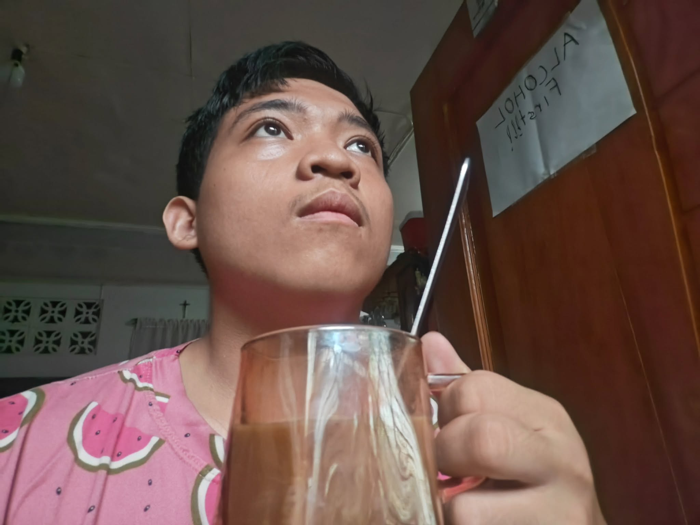

I sit by the window with a coffee in hand, watching the world outside my home bustle with wildlife, from the branches down to the ground. Then I wonder, if sir were to read this, would he believe it? How would he know that what I am seeing is real?
Maybe I could offer photography as proof that what I am seeing is genuine. But can a handful of ducks, fish, and small bugs really be called bustling wildlife to him? After a small sip of my coffee (Nescafe, not sponsored), I have decided that to me, this counts as a thriving ecosystem, simply because it is what I see as bustling wildlife.
Sir might disagree. He may not see this as a lively ecosystem at all, only because his idea of "bustling with wildlife" differs from mine. Still, both views are opinions, shaped by our own experiences, and both are true to each of us in our own way.
What we can agree on is that there is real life outside this window. Ducks waddle to and from the pond hunting for fish or insects, ants march past the windowsill carrying scraps of food in their mandibles, and fish slip deeper into the water to escape the ducks above.
This makes me truly wonder: is truth always more important than opinion? I look outside again, searching for an answer, and eventually land on no. Think of it this way: if someone asks what your favorite hobbies are, that question calls for an opinion, because it reveals who you are, not simply a fact about you.
Still, opinions are shaped by truth. If we rely only on opinions and never seek what is true, we end up convincing no one but ourselves, because every opinion needs some foundation of truth to stand on. In life, even something as simple as sitting here with my coffee, there is a time and a place for everything.